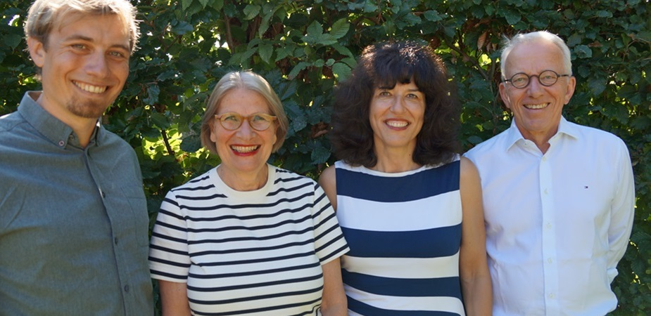

In Organisationen entstehen Lösungen nicht durch einfache Antworten, sondern im Umgang mit produktiven Spannungen.
beo-dialog begleitet diese Prozesse – für wirksame Zusammenarbeit, klare Führung und nachhaltige Entwicklung.
Gespräch anfragenIhre Anliegen sind so vielfältig wie Ihre Aufgaben, Ihre Interessen und die Menschen, mit denen Sie arbeiten.
In Organisationen, deren Arbeitsgegenstand der Mensch selbst ist – etwa in Beratung, Bildung, Therapie, medizinischer Versorgung oder sozialer Betreuung – gehört die Reflexion professioneller Beziehungen zum Arbeitsalltag. Supervision und andere Beratungsformate unterstützen Mitarbeitende dabei, komplexe Klientenbeziehungen zu gestalten, Rollen zu klären und die eigene professionelle Haltung weiterzuentwickeln.
Auch Unternehmen, in denen Produkte und Dienstleistungen im Mittelpunkt stehen, profitieren von Coaching, Supervision und Organisationsberatung, um Arbeits- und Rollenbeziehungen zu reflektieren, persönliche Haltungen, Interessen und Konflikte zu klären.
Führungskräfte brauchen Sparringspartner. Veränderungs- und Transformationsprozesse verlangen Aufmerksamkeit, Struktur und Kraft.
Wir bieten Ihnen verschiedene Beratungsformate – zugeschnitten auf Ihre spezifischen Herausforderungen und Entwicklungsziele.
Wir stärken die Reflexions- und Handlungskompetenz von Führungskräften, Teams und Organisationen in herausfordernden Situationen.
Wir hören zu, klären den Kontext und verstehen Ihr Anliegen.
Zusammen mit Ihnen entwickeln wir passgenaue Konzepte mit Wirkung.
Das vereinbarte Konzept setzen wir gemeinsam mit Ihnen um.
Wir überprüfen zusammen, ob die gewünschten nachhaltigen Effekte erreicht wurden.
Schwarz-Weiß-Denken und einfache Ja-Nein-Antworten führen selten zu tragfähigen Lösungen – oft sind sie selbst Teil des Problems. Deshalb vermeiden wir Einseitigkeiten. Uns geht es um die für Sie angemessene Balance in produktiven Spannungsfeldern:
In diesen Spannungen entstehen Entwicklung, Klarheit und Handlungsfähigkeit.
Wir begleiten Führungskräfte, Mitarbeitende, Teams und Organisationen in Entwicklungsprozessen durch Coaching, Supervision, Organisationsberatung und gruppendynamische Trainings. Gemeinsam mit Ihnen schaffen wir Rollen-, Struktur- und Prozessklarheit, stärken Führungskompetenzen und verbessern Zusammenarbeit.

Die Beratergruppe beo-dialog gibt es seit über 30 Jahren. Sie arbeiten mit einem erfahrenen Team von Coaches, Supervisor:innen, Organisationsberater:innen und Trainer:innen aus drei Generationen – verbunden durch den gemeinsamen Anspruch, Sie wirksam bei Ihren Entwicklungsvorhaben zu unterstützen.
Unser Ansatz verbindet gruppendynamisch, systemisch und psychoanalytisch fundierte Methoden mit hoher Praxisorientierung. Ziel sind spürbare, nachhaltige Veränderungen im Arbeitsalltag.
Bei Bedarf greifen wir auf ein breites Netzwerk von Kolleg:innen mit unterschiedlichen fachlichen Schwerpunkten zurück, damit Sie stets die Expertise erhalten, die Ihre Situation erfordert.
Als Mitglieder unserer Fach- und Berufsverbände engagieren wir uns über die Arbeit mit unseren Kund:innen hinaus für die fachliche und berufspolitische Weiterentwicklung unserer Professionen.
Lassen Sie uns ins Gespräch kommen.
beo-dialog GbR
Nikolaus-Groß-Weg 5
48167 Münster
E-Mail: kontakt@beo-dialog.de